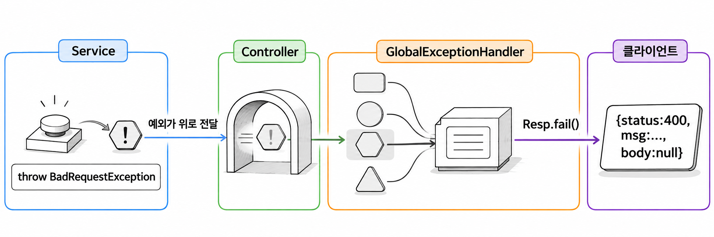
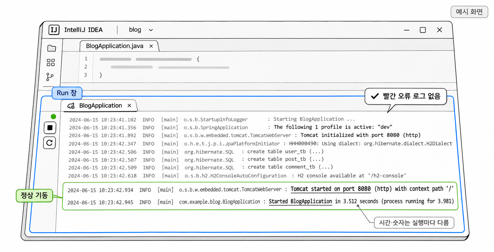

4장. 공통 응답과 예외 처리 만들기
1. 응답 모양을 통일하는 이유
SSR 게시판은 HTML 화면을 돌려주는 서버였습니다. 오류가 나면 에러 페이지 하나를 보여 주면 끝났습니다. REST API는 JSON을 돌려주고, 프런트엔드 코드가 그 JSON을 읽어서 화면을 그립니다. 그런데 상황마다 JSON 모양이 다르면 클라이언트는 응답을 받을 때마다 구조부터 따져 봐야 합니다.
같은 API를 규칙 없이 만든 경우와 응답 모양을 하나로 맞춘 경우는 다음과 같이 다릅니다.
| 상황 | 통일하지 않은 응답 | 통일한 응답 |
|---|---|---|
| 조회 성공 | {"id":1,"username":"ssar"} | {"status":200,"msg":"성공","body":{"id":1,"username":"ssar"}} |
| 삭제 성공 | (빈 본문) | {"status":200,"msg":"성공","body":null} |
| 오류 | {"timestamp":"...","status":400,"error":"Bad Request","path":"/join"} | {"status":400,"msg":"이미 존재하는 유저네임입니다","body":null} |
왼쪽 열의 성공 응답은 데이터만 있거나 본문이 아예 비어 있습니다. 오류 응답은 스프링부트가 기본으로 만든 JSON이라서 필드 이름이 또 다릅니다. 오른쪽 열은 성공과 실패 모두 status · msg · body 세 필드로 이루어집니다. 클라이언트는 먼저 status를 봅니다. 성공이면 body를 꺼내고, 실패면 msg를 꺼내 보여 줍니다. 이 한 가지 규칙으로 모든 응답을 다룰 수 있습니다.
이 장에서 만드는 것은 셋입니다. 이 모양의 응답을 만드는 상자 Resp를 먼저 만듭니다. 그다음 실패 상황을 나타내는 예외 클래스를 만들고, 마지막으로 던진 예외를 한곳에서 받아 Resp 모양으로 바꾸는 처리기를 만듭니다.
2. Resp 공통 응답
2.1 record로 만든 응답 상자
Resp는 status · msg · body 세 값을 담아 전달하기만 하는 객체입니다. 이런 객체는 클래스보다 record로 만드는 편이 간단합니다. record는 Java 16에서 정식 문법이 되었습니다. 선언부에 필드 목록만 적으면 생성자, 접근자, equals() · hashCode() · toString()을 컴파일러가 만들어 줍니다.
기본 문법
public record 레코드명(타입 필드명, 타입 필드명) {
}record의 필드는 모두 final이므로 객체를 만든 뒤에는 값을 바꿀 수 없습니다. 접근자 이름은 getStatus()가 아니고 필드 이름 그대로 status()입니다. JSON 변환을 맡는 Jackson이 record 접근자를 알아보기 때문에 Resp 객체는 별도 설정 없이 JSON으로 바뀝니다.
body에 들어갈 값은 API마다 다릅니다. 회원 정보일 때도 있고 게시글 목록일 때도 있습니다. 그래서 body의 타입은 고정하지 않고 제네릭 T로 둡니다.
2.2 ok()와 fail()
컨트롤러마다 new Resp<>(200, "성공", body)를 직접 쓰면 숫자나 문구를 틀리게 적기 쉽습니다. 그래서 성공 응답은 ok(), 실패 응답은 fail()이라는 정적 메서드로 만듭니다.
두 메서드는 Resp를 ResponseEntity에 담아서 돌려줍니다. ResponseEntity는 응답 본문과 HTTP 상태 코드, 헤더를 함께 정하는 스프링의 응답 객체입니다. JSON 안의 status만 400이고 실제 HTTP 상태 코드가 200이면, HTTP 상태 코드를 보는 클라이언트는 이 응답을 성공으로 처리합니다. ok()와 fail()은 같은 상태 코드를 ResponseEntity와 Resp 양쪽에 넣습니다. 그래서 두 값이 어긋날 일이 없습니다.
예제 4-1 — 공통 응답 상자 만들기
이어서: 예제 3-1
파일명: src/main/java/com/newtenco/blog/core/util/Resp.java
package com.newtenco.blog.core.util;
import org.springframework.http.HttpStatus;
import org.springframework.http.ResponseEntity;
/**
* 모든 API 응답을 같은 모양으로 맞추는 공통 상자.
* { "status": 200, "msg": "성공", "body": { ... } }
*/
public record Resp<T>(Integer status, String msg, T body) {
public static <B> ResponseEntity<Resp<B>> ok(B body) {
return ResponseEntity.ok(new Resp<>(200, "성공", body));
}
public static ResponseEntity<Resp<Void>> fail(HttpStatus status, String msg) {
return ResponseEntity.status(status).body(new Resp<>(status.value(), msg, null));
}
}실행 결과
Resp는 다른 코드에서 불러야 동작하므로 이 파일만으로는 출력되는 것이 없습니다. 서버가 컴파일 오류 없이 기동되면 성공입니다.
ok()는 HTTP 상태를 200으로, msg를 "성공"으로 정하고 넘겨받은 데이터를 body에 넣습니다. fail()은 넘겨받은 HttpStatus를 HTTP 상태 코드와 status 필드에 똑같이 씁니다. 실패 응답에는 돌려줄 데이터가 없으므로 body는 null이고, 반환 타입의 제네릭도 Void입니다.
두 메서드는 부르는 곳이 다릅니다.
| 메서드 | 부르는 곳 | 응답 |
|---|---|---|
Resp.ok(body) | 컨트롤러 | HTTP 200 + {"status":200,"msg":"성공","body":...} |
Resp.fail(status, msg) | 전역 예외 처리기 | HTTP status + {"status":...,"msg":...,"body":null} |
컨트롤러는 성공했을 때만 ok()를 부릅니다. 실패하면 응답을 직접 만들지 않고 예외를 던집니다. 그 예외를 응답으로 바꾸는 일은 4절의 처리기가 맡습니다.
3. 상태 코드별 사용자 정의 예외
서비스 코드가 "이미 존재하는 유저네임" 같은 실패 상황을 만나면 그 자리에서 예외를 던집니다. 이때 RuntimeException을 그대로 던지면 처리기는 이 예외를 400으로 보낼지 404로 보낼지 정할 근거가 없습니다. 그래서 HTTP 상태 코드마다 예외 클래스를 하나씩 만듭니다. 예외 이름만 보고도 어떤 상태 코드로 응답할지 알 수 있게 하려는 것입니다.
| 예외 | 상태 코드 | 쓰는 상황(예) |
|---|---|---|
BadRequestException | 400 Bad Request | 이미 존재하는 유저네임 |
UnauthorizedException | 401 Unauthorized | 로그인 실패(비밀번호 불일치) |
ForbiddenException | 403 Forbidden | 남의 글 수정 |
NotFoundException | 404 Not Found | 없는 게시글 조회 |
401은 요청한 사람이 누구인지 확인되지 않았다는 뜻입니다. 403은 누구인지는 알지만 그 일을 할 권한이 없다는 뜻입니다. 두 코드의 차이는 5장에서 인증과 인가를 배울 때 자세히 다룹니다.
예제 4-2 — 상태 코드별 예외 만들기
이어서: 예제 4-1
파일명: src/main/java/com/newtenco/blog/core/handler/errors/BadRequestException.java
package com.newtenco.blog.core.handler.errors;
// 400: 잘못된 요청 (예: 이미 존재하는 유저네임)
public class BadRequestException extends RuntimeException {
public BadRequestException(String msg) {
super(msg);
}
}파일명: src/main/java/com/newtenco/blog/core/handler/errors/UnauthorizedException.java
package com.newtenco.blog.core.handler.errors;
// 401: 인증 실패 (예: 비밀번호 불일치)
public class UnauthorizedException extends RuntimeException {
public UnauthorizedException(String msg) {
super(msg);
}
}파일명: src/main/java/com/newtenco/blog/core/handler/errors/ForbiddenException.java
package com.newtenco.blog.core.handler.errors;
// 403: 권한 없음 (예: 남의 글 수정)
public class ForbiddenException extends RuntimeException {
public ForbiddenException(String msg) {
super(msg);
}
}파일명: src/main/java/com/newtenco/blog/core/handler/errors/NotFoundException.java
package com.newtenco.blog.core.handler.errors;
// 404: 자원 없음 (예: 없는 게시글)
public class NotFoundException extends RuntimeException {
public NotFoundException(String msg) {
super(msg);
}
}실행 결과
아직 네 예외를 던지는 코드가 없으므로 출력은 없습니다. 서버가 컴파일 오류 없이 기동되면 성공입니다.
네 클래스는 이름과 주석만 다릅니다. 생성자로 받은 msg를 super(msg)로 부모에게 넘기므로, 나중에 getMessage()로 같은 문구를 꺼낼 수 있습니다. 이 문구가 응답 JSON의 msg가 됩니다.
부모 클래스로 RuntimeException을 고른 이유는 두 가지입니다. 첫째, RuntimeException 계열은 언체크 예외라서 메서드 선언에 throws를 붙이지 않고도 던질 수 있습니다. 서비스에서 던진 예외는 컨트롤러를 지나 처리기까지 올라가는데, 그 사이의 메서드마다 throws를 적지 않아도 됩니다. 둘째, 스프링의 @Transactional은 기본 설정에서 언체크 예외가 발생했을 때 롤백합니다.
코드 조각
if (userRepository.findByUsername(username).isPresent()) {
throw new BadRequestException("이미 존재하는 유저네임입니다");
}서비스는 실패 조건을 만나면 예외를 던지는 데서 끝납니다. 응답을 어떤 모양으로 만들지는 서비스가 신경 쓰지 않습니다. findByUsername()은 7장에서 만드는 UserRepository의 메서드입니다.
4. 전역 예외 처리기
4.1 @RestControllerAdvice와 @ExceptionHandler
던진 예외를 받아 응답으로 바꾸는 클래스가 전역 예외 처리기입니다. 어노테이션 두 개로 만듭니다.
@ExceptionHandler(예외클래스.class)는 메서드에 붙입니다. 괄호 안의 예외가 발생하면 이 메서드가 실행되고, 메서드의 반환값이 그대로 응답이 됩니다. @RestControllerAdvice는 클래스에 붙입니다. 이 어노테이션이 있으면 클래스 안의 @ExceptionHandler가 컨트롤러 하나가 아니라 모든 컨트롤러에 적용됩니다. 이름에 Rest가 들어 있는 만큼 반환값을 뷰 이름이 아닌 응답 본문(JSON)으로 씁니다.
기본 문법
@RestControllerAdvice
public class 처리기클래스명 {
@ExceptionHandler(예외클래스.class)
public ResponseEntity<?> 메서드명(예외클래스 e) {
return 응답;
}
}예외가 처리기까지 가는 길은 그림 4-1과 같습니다.

컨트롤러와 서비스는 예외를 try-catch로 잡지 않습니다. 예외는 호출한 쪽으로 계속 올라가 스프링 MVC에 닿습니다. 스프링 MVC는 예외 타입에 맞는 @ExceptionHandler 메서드를 골라 실행하고, 그 메서드가 Resp.fail()로 응답을 만듭니다. 실패 응답을 만드는 코드가 처리기 클래스 하나에 모이므로, 나중에 응답 모양을 바꿀 때도 이 클래스만 고치면 됩니다.
3절에서 만든 예외 네 개를 받는 처리기부터 만듭니다.
예제 4-3 — 상태 코드별 예외 처리기 만들기
이어서: 예제 4-2
파일명: src/main/java/com/newtenco/blog/core/handler/GlobalExceptionHandler.java
package com.newtenco.blog.core.handler;
import com.newtenco.blog.core.handler.errors.BadRequestException;
import com.newtenco.blog.core.handler.errors.ForbiddenException;
import com.newtenco.blog.core.handler.errors.NotFoundException;
import com.newtenco.blog.core.handler.errors.UnauthorizedException;
import com.newtenco.blog.core.util.Resp;
import lombok.extern.slf4j.Slf4j;
import org.springframework.http.HttpStatus;
import org.springframework.http.ResponseEntity;
import org.springframework.web.bind.annotation.ExceptionHandler;
import org.springframework.web.bind.annotation.RestControllerAdvice;
/**
* 컨트롤러/서비스에서 던진 예외를 한곳에서 잡아 Resp 모양으로 응답한다.
*/
@Slf4j
@RestControllerAdvice
public class GlobalExceptionHandler {
@ExceptionHandler(BadRequestException.class)
public ResponseEntity<?> ex400(BadRequestException e) {
log.warn("[400] {}", e.getMessage());
return Resp.fail(HttpStatus.BAD_REQUEST, e.getMessage());
}
@ExceptionHandler(UnauthorizedException.class)
public ResponseEntity<?> ex401(UnauthorizedException e) {
log.warn("[401] {}", e.getMessage());
return Resp.fail(HttpStatus.UNAUTHORIZED, e.getMessage());
}
@ExceptionHandler(ForbiddenException.class)
public ResponseEntity<?> ex403(ForbiddenException e) {
log.warn("[403] {}", e.getMessage());
return Resp.fail(HttpStatus.FORBIDDEN, e.getMessage());
}
@ExceptionHandler(NotFoundException.class)
public ResponseEntity<?> ex404(NotFoundException e) {
log.warn("[404] {}", e.getMessage());
return Resp.fail(HttpStatus.NOT_FOUND, e.getMessage());
}
}실행 결과
예외를 던지는 컨트롤러가 아직 없으므로 서버가 정상 기동되는지만 확인합니다.
네 메서드는 받는 예외 클래스와 HttpStatus 값만 다릅니다. 서비스가 new BadRequestException("이미 존재하는 유저네임입니다")를 던졌다면 ex400()이 실행됩니다. 이때 HTTP 400과 함께 {"status":400,"msg":"이미 존재하는 유저네임입니다","body":null}이 응답으로 나갑니다.
@Slf4j는 Lombok이 클래스에 log 필드를 만들어 주는 어노테이션입니다. 클라이언트가 잘못된 값을 보내서 생긴 실패는 서버 고장이 아니므로 log.warn()으로 남깁니다. 실습 중 로그에 [400]이 보이면 서버 코드보다 요청 내용을 먼저 확인합니다.
4.2 @Valid 검증 실패와 쿼리스트링 누락 처리
@Valid는 SSR 게시판에서 이미 써 본 검증 어노테이션입니다. 요청 DTO 필드에 @NotBlank · @Size 같은 조건을 달고 컨트롤러 파라미터에 @Valid를 붙이면, 스프링이 컨트롤러 메서드를 실행하기 전에 값을 검사합니다.
SSR에서는 Errors(또는 BindingResult)를 파라미터로 함께 받고 if (errors.hasErrors())로 실패를 직접 확인했습니다. Errors 파라미터가 없으면 스프링은 검증 실패 시 컨트롤러 메서드를 실행하지 않습니다. 대신 MethodArgumentNotValidException을 던집니다. 이 예외를 전역 예외 처리기에서 받으면 컨트롤러마다 같은 if 문을 반복할 필요가 없어집니다.
@RequestBody로 JSON을 받는 요청은 다음 순서로 검증됩니다.
- 클라이언트가 JSON을 보냅니다.
- 스프링이 JSON을 요청 DTO 객체로 바꿉니다.
@Valid가 DTO 필드의@NotBlank·@Size·@Email조건을 검사합니다.- 조건이 하나라도 어긋나면 컨트롤러 메서드를 실행하지 않고
MethodArgumentNotValidException을 던집니다. - 전역 예외 처리기가 이 예외를 받아 첫 번째 오류를
"필드명:메시지"모양으로 응답합니다.
코드 조각
// @Valid 검증 실패 -> 400
@ExceptionHandler(MethodArgumentNotValidException.class)
public ResponseEntity<?> validation(MethodArgumentNotValidException e) {
FieldError fe = e.getBindingResult().getFieldErrors().getFirst();
String msg = fe.getField() + ":" + fe.getDefaultMessage();
log.warn("[400] 유효성 검사 실패 - {}", msg);
return Resp.fail(HttpStatus.BAD_REQUEST, msg);
}getBindingResult()로 꺼낸 검증 결과에는 실패한 필드가 여러 개 있을 수 있습니다. 응답의 msg는 문자열 하나뿐이므로 getFirst()로 첫 번째 오류만 씁니다. getFirst()는 Java 21에서 List에 추가된 메서드입니다. getField()는 실패한 필드 이름을, getDefaultMessage()는 어노테이션의 message 속성에 적은 문구를 돌려줍니다. 7장의 회원가입 DTO에 username을 두 글자로 보내면 msg는 "username:유저네임은 4~20자여야 합니다"가 됩니다. 클라이언트는 콜론 앞의 필드 이름을 보고 어느 입력칸에 오류를 표시할지 정합니다.
요청 값이 잘못되는 경우는 하나 더 있습니다. ?username=ssar처럼 쿼리스트링으로 받아야 하는 값이 빠지면 스프링은 MissingServletRequestParameterException을 던집니다. 이것도 클라이언트가 값을 빠뜨린 것이므로 400으로 응답합니다.
코드 조각
// 필수 쿼리스트링(?username=) 누락 -> 400
@ExceptionHandler(MissingServletRequestParameterException.class)
public ResponseEntity<?> missingParam(MissingServletRequestParameterException e) {
return Resp.fail(HttpStatus.BAD_REQUEST, e.getParameterName() + ":값을 입력해주세요");
}getParameterName()은 빠진 파라미터의 이름을 돌려줍니다. 덕분에 이 응답도 @Valid 실패와 같은 "필드명:메시지" 모양이 됩니다. 두 메서드는 다음 항의 예제 4-4에서 처리기에 넣습니다.
4.3 예상하지 못한 예외와 500 응답
지금까지 만든 처리기는 미리 정해 둔 예외만 받습니다. NullPointerException이나 DB 오류처럼 예상하지 못한 예외가 나면 스프링부트의 기본 오류 응답이 나가서 응답 모양이 다시 흐트러집니다. 그래서 마지막 안전망으로 Exception.class를 받는 메서드를 둡니다.
모든 예외가 Exception의 자식이니 BadRequestException도 이 메서드로 가지 않을까 걱정될 수 있습니다. 스프링은 발생한 예외와 상속 관계가 가장 가까운 @ExceptionHandler를 고릅니다. 그래서 BadRequestException은 그대로 ex400()으로 가고, 맞는 메서드가 따로 없는 예외만 Exception.class 메서드에 도착합니다.
이 메서드는 응답을 만들 때 두 가지를 지킵니다.
첫째, 내부 오류 메시지를 클라이언트에 보내지 않습니다. 예외 메시지에는 테이블 이름이나 SQL 같은 서버 내부 정보가 섞여 있을 수 있습니다. 클라이언트에는 "관리자에게 문의하세요"만 보내고, 원인은 log.error()로 스택 트레이스까지 서버 로그에 남깁니다.
둘째, 스프링 MVC가 원래 상태 코드를 정해 둔 예외는 500으로 바꾸지 않습니다. 없는 주소를 요청하면 404(NoResourceFoundException)가, 허용하지 않는 HTTP 메서드로 요청하면 405가 나가야 맞습니다. 이런 예외는 스프링의 ErrorResponse 인터페이스를 구현하므로 getStatusCode()로 원래 상태 코드를 꺼낼 수 있습니다.
예제 4-4 — 검증 실패와 예상하지 못한 예외 처리 추가하기
이어서: 예제 4-3
파일명: src/main/java/com/newtenco/blog/core/handler/GlobalExceptionHandler.java
package com.newtenco.blog.core.handler;
import com.newtenco.blog.core.handler.errors.BadRequestException;
import com.newtenco.blog.core.handler.errors.ForbiddenException;
import com.newtenco.blog.core.handler.errors.NotFoundException;
import com.newtenco.blog.core.handler.errors.UnauthorizedException;
import com.newtenco.blog.core.util.Resp;
import lombok.extern.slf4j.Slf4j;
import org.springframework.http.HttpStatus;
import org.springframework.http.ResponseEntity;
import org.springframework.validation.FieldError;
import org.springframework.web.ErrorResponse;
import org.springframework.web.bind.MethodArgumentNotValidException;
import org.springframework.web.bind.MissingServletRequestParameterException;
import org.springframework.web.bind.annotation.ExceptionHandler;
import org.springframework.web.bind.annotation.RestControllerAdvice;
/**
* 컨트롤러/서비스에서 던진 예외를 한곳에서 잡아 Resp 모양으로 응답한다.
*/
@Slf4j
@RestControllerAdvice
public class GlobalExceptionHandler {
// @Valid 검증 실패 -> 400
// 컨트롤러마다 if (errors.hasErrors()) 를 쓰지 않아도 여기서 한 번에 처리된다.
@ExceptionHandler(MethodArgumentNotValidException.class)
public ResponseEntity<?> validation(MethodArgumentNotValidException e) {
FieldError fe = e.getBindingResult().getFieldErrors().getFirst();
String msg = fe.getField() + ":" + fe.getDefaultMessage();
log.warn("[400] 유효성 검사 실패 - {}", msg);
return Resp.fail(HttpStatus.BAD_REQUEST, msg);
}
// 필수 쿼리스트링(?username=) 누락 -> 400
@ExceptionHandler(MissingServletRequestParameterException.class)
public ResponseEntity<?> missingParam(MissingServletRequestParameterException e) {
return Resp.fail(HttpStatus.BAD_REQUEST, e.getParameterName() + ":값을 입력해주세요");
}
@ExceptionHandler(BadRequestException.class)
public ResponseEntity<?> ex400(BadRequestException e) {
log.warn("[400] {}", e.getMessage());
return Resp.fail(HttpStatus.BAD_REQUEST, e.getMessage());
}
@ExceptionHandler(UnauthorizedException.class)
public ResponseEntity<?> ex401(UnauthorizedException e) {
log.warn("[401] {}", e.getMessage());
return Resp.fail(HttpStatus.UNAUTHORIZED, e.getMessage());
}
@ExceptionHandler(ForbiddenException.class)
public ResponseEntity<?> ex403(ForbiddenException e) {
log.warn("[403] {}", e.getMessage());
return Resp.fail(HttpStatus.FORBIDDEN, e.getMessage());
}
@ExceptionHandler(NotFoundException.class)
public ResponseEntity<?> ex404(NotFoundException e) {
log.warn("[404] {}", e.getMessage());
return Resp.fail(HttpStatus.NOT_FOUND, e.getMessage());
}
// 예상하지 못한 모든 예외 -> 500 (내부 메시지는 숨긴다)
@ExceptionHandler(Exception.class)
public ResponseEntity<?> exUnknown(Exception e) {
// 없는 주소(404), 허용하지 않는 메서드(405) 같은 스프링 MVC 예외는 원래 상태 코드를 유지한다
if (e instanceof ErrorResponse er) {
HttpStatus status = HttpStatus.valueOf(er.getStatusCode().value());
return Resp.fail(status, status.getReasonPhrase());
}
log.error("[500] 예상하지 못한 오류", e);
return Resp.fail(HttpStatus.INTERNAL_SERVER_ERROR, "관리자에게 문의하세요");
}
}실행 결과
서버가 정상 기동되면 성공입니다. 실제 응답은 컨트롤러와 시큐리티 설정을 만든 뒤에 확인합니다(5절 참고).
e instanceof ErrorResponse er는 Java 16부터 쓸 수 있는 패턴 매칭입니다. 타입 검사를 통과하면 형변환된 값이 er 변수에 바로 들어갑니다. getReasonPhrase()는 상태 코드의 표준 문구("Not Found", "Method Not Allowed")를 돌려줍니다.
완성된 처리기는 예외를 다음과 같이 응답으로 바꿉니다.
| 발생 상황 | 예외 | 응답 |
|---|---|---|
@Valid 검증 실패 | MethodArgumentNotValidException | 400, "필드명:메시지" |
| 필수 쿼리스트링 누락 | MissingServletRequestParameterException | 400, "필드명:값을 입력해주세요" |
| 이미 존재하는 유저네임 | BadRequestException | 400, 던질 때 넣은 메시지 |
| 비밀번호 불일치 | UnauthorizedException | 401, 던질 때 넣은 메시지 |
| 남의 글 수정 | ForbiddenException | 403, 던질 때 넣은 메시지 |
| 없는 자원 | NotFoundException | 404, 던질 때 넣은 메시지 |
| 없는 주소 요청 | NoResourceFoundException(ErrorResponse 구현) | 404, "Not Found" |
| 그 밖의 예외 | Exception | 500, "관리자에게 문의하세요" |
5. 지금 확인할 수 있는 것
5.1 서버 정상 실행 확인과 필터 단계 예외의 한계
IntelliJ에서 BlogApplication을 실행합니다. 이 장에서 추가한 파일은 여섯 개입니다.
| 패키지 | 파일 |
|---|---|
core.util | Resp.java |
core.handler.errors | BadRequestException.java · UnauthorizedException.java · ForbiddenException.java · NotFoundException.java |
core.handler | GlobalExceptionHandler.java |
실행 결과
콘솔 끝부분에 다음과 같은 로그가 나오면 정상입니다. 시간과 숫자는 실행할 때마다 달라집니다.
Tomcat started on port 8080 (http) with context path '/'
Started BlogApplication in 3.512 seconds (process running for 3.981)
생성형 예시 · 실제 실행 안 함
지금 Talend API Tester로 요청을 보내도 Resp 모양의 응답은 볼 수 없습니다. 예외를 던질 컨트롤러가 아직 없기 때문입니다. 게다가 1장에서 본 것처럼 시큐리티 기본 설정이 모든 요청을 로그인 화면으로 보냅니다.
전역 예외 처리기에는 알아 둘 한계가 하나 있습니다. @RestControllerAdvice가 받는 예외는 컨트롤러와 그 아래(서비스, 리포지토리)에서 던진 것뿐입니다. 시큐리티 필터는 요청이 컨트롤러에 닿기 전에 실행됩니다. 그래서 필터에서 인증에 실패하면 이 처리기를 거치지 않습니다. 필터 단계에서 쓸 실패 응답은 6장에서 따로 만듭니다. Resp 모양의 JSON은 6장에서 시큐리티 설정을 바꾼 뒤에 처음 확인할 수 있습니다. 필터 단계의 {"status":401,...} 응답은 6장 끝에서 토큰 없이 /api/users/me를 요청해 확인합니다.